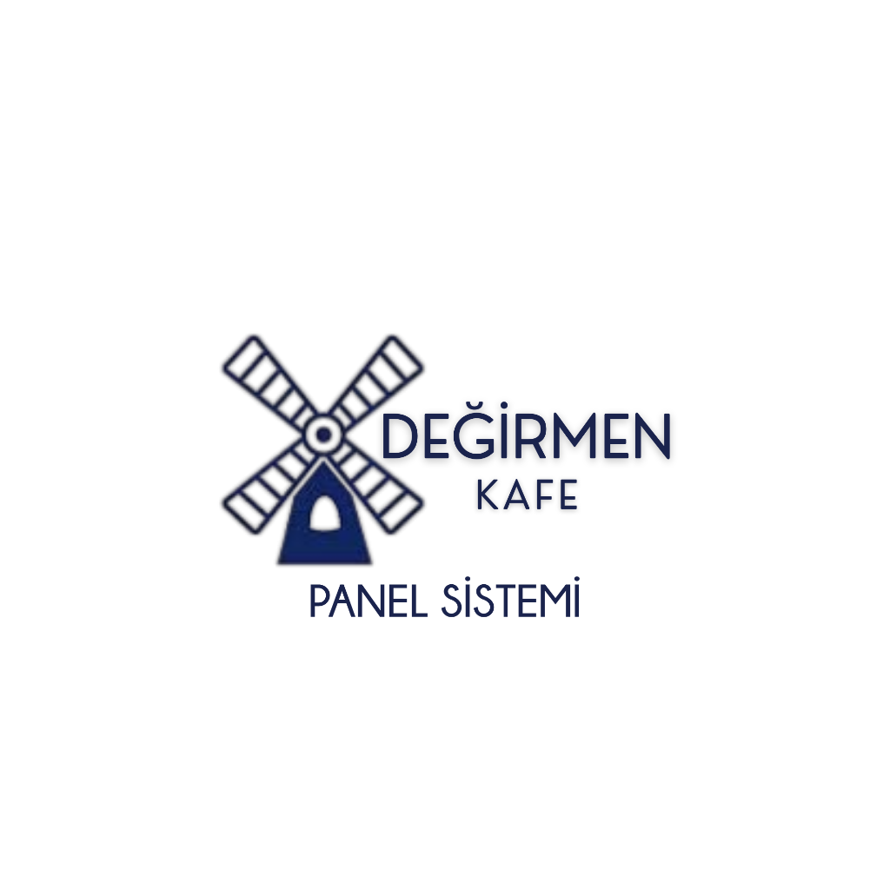

Yönetmek istediğiniz Değirmen Kafe modülünü seçerek hemen içeriye giriş yapın.
Hammaddelerin anlık stok yönetim portalı
Ürün reçeteleri ve yapılış tarifleri
Hızlı satış ve sipariş yönetimi
Denetim ve arşiv dosyaları yönetim portalı
Sistem ayarlarına erişmek için yetkili şifresini girin.